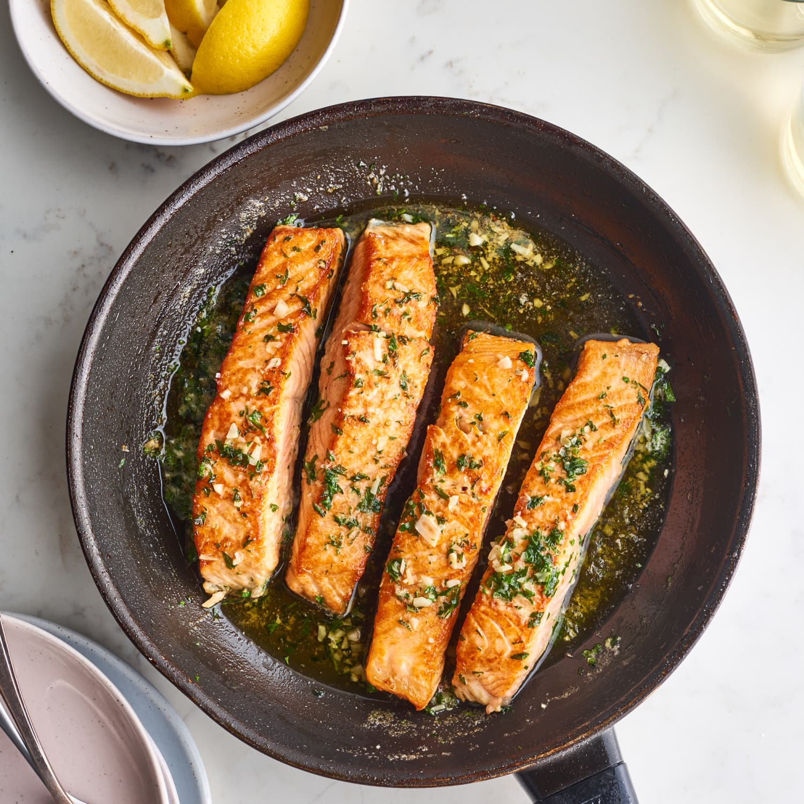

Butter Bathed Salmon

Description
Salmon is one of the most protein dense and easy to cook sea foods out there.It is not the
most budget friendly. However, depending on where you live, it is possible to buy frozen Salmonin bulk.
Ingridients
- Salmon Fillet
- Butter
- Thyme
- Lemon
- Black pepper and Salt
Steps
- set stove to high heat and add a small amount of butter to your pan
- Put salmon fillet on your Pan and set stove to low heat
- Leave on stove till fillet skin is crispy
- set oven to high heat and add massive chunk of butter
- Add THyme and bathe your fillet with butter
- Add black pepper and salt to your liking
- Add lime
- Serve with rice or salad or INDULGE with a bit of fries on the side